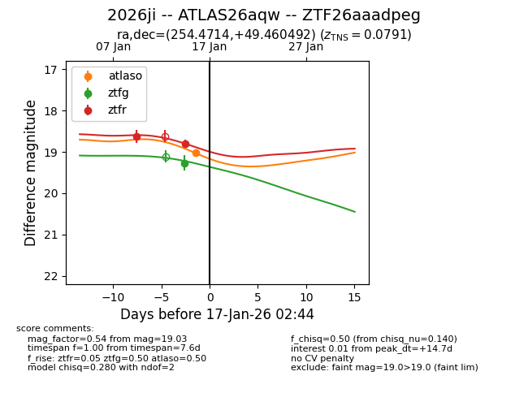
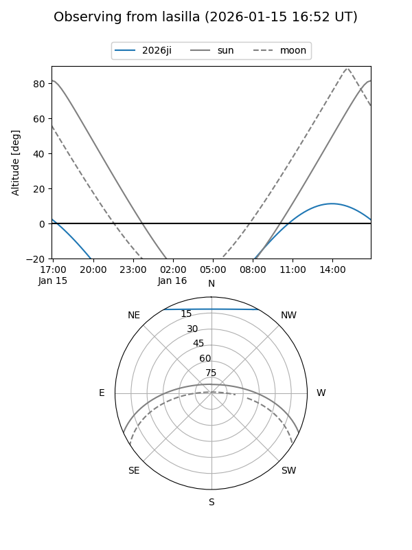
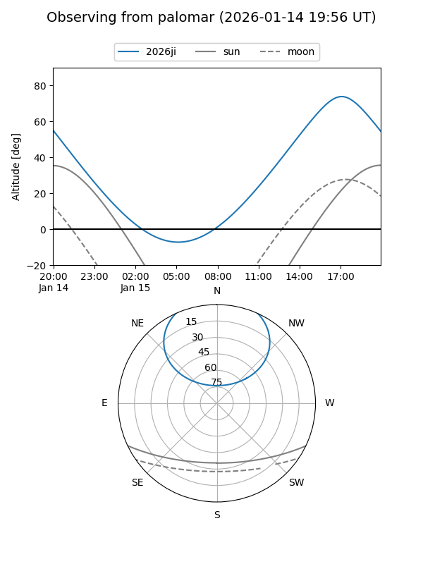
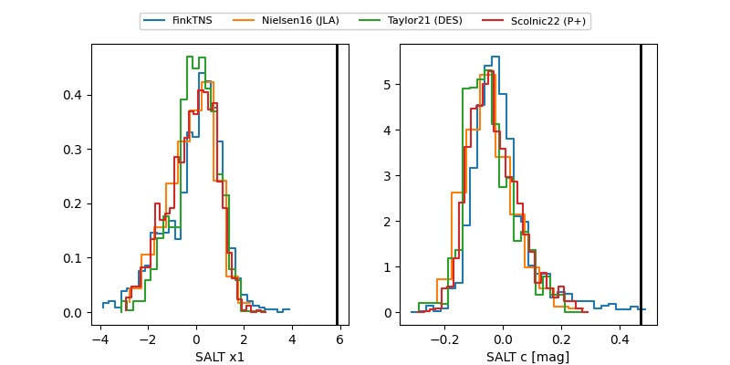

2026ji
Target 2026ji at 2026-01-17 07:10
Aliases and brokers:
FINK: link
Lasair: link
ALeRCE: link
TNS: link
YSE: link
alt names
ZTF26aaadpeg (ztf,fink_ztf)
2026ji (tns,yse)
ATLAS26aqw (atlas)
Coordinates:
equatorial (ra, dec) = 254.4714,+49.46049
equatorial (HMS+DMS) = 16:57:53.14,+49:27:37.77
galactic (l, b) = (76.0507,+38.42983)
Flags:
confirmed ia
Photometry:
last atlaso=19.03, ztfg=19.27, ztfr=18.81
1 atlaso, 1 ztfg, 2 ztfr detections
Lightcurve

Visibility


Additional plots
